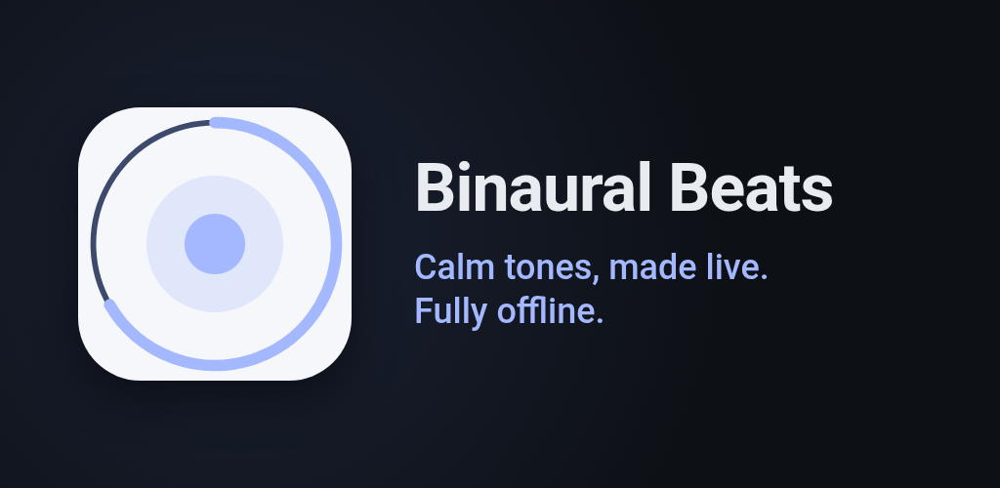
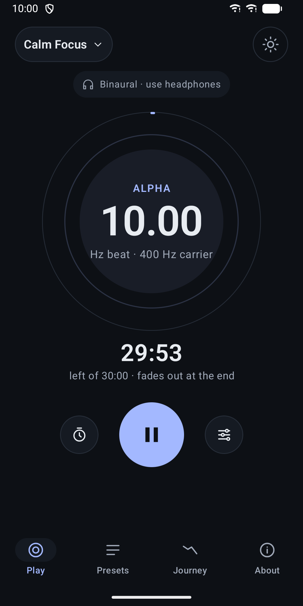
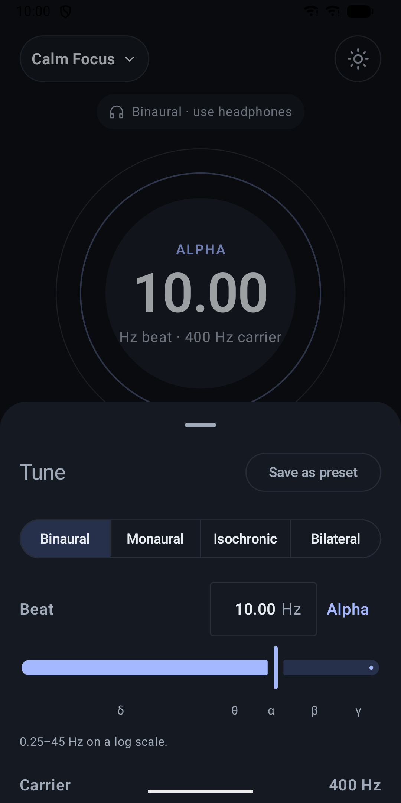
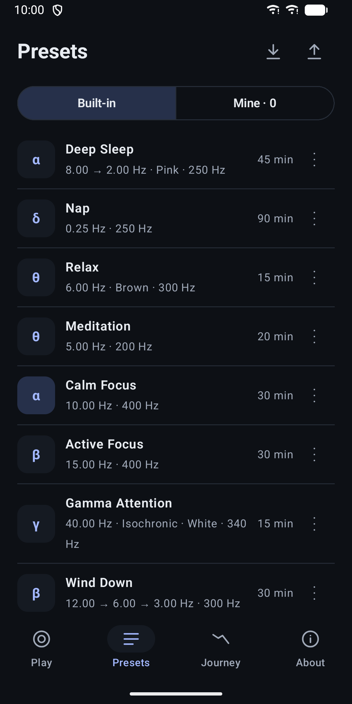
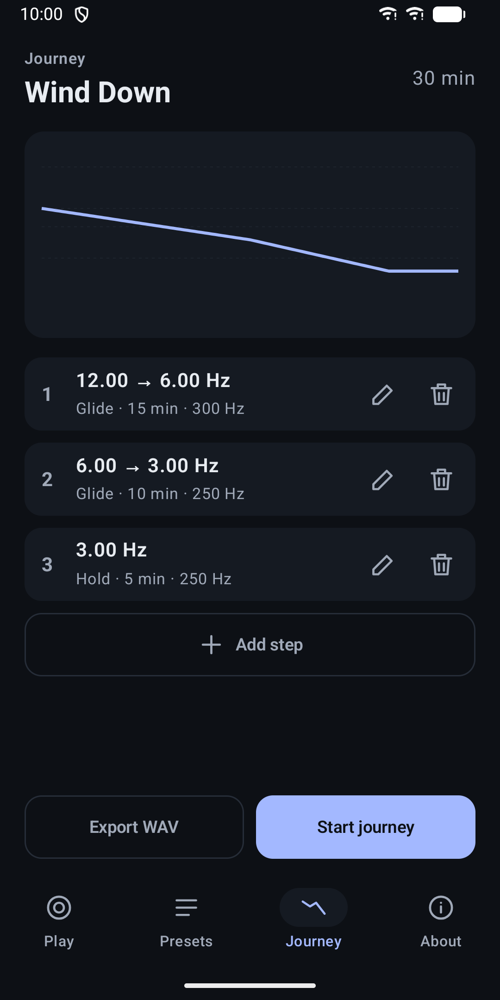
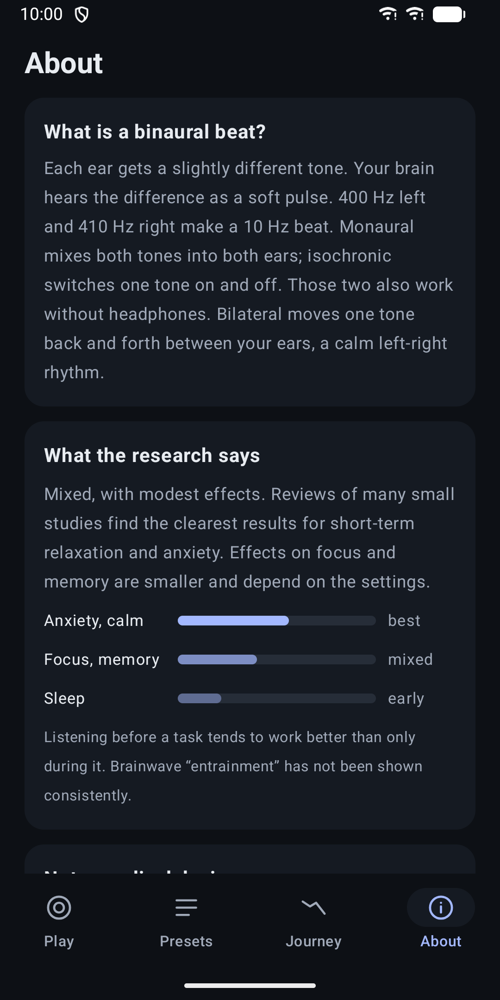
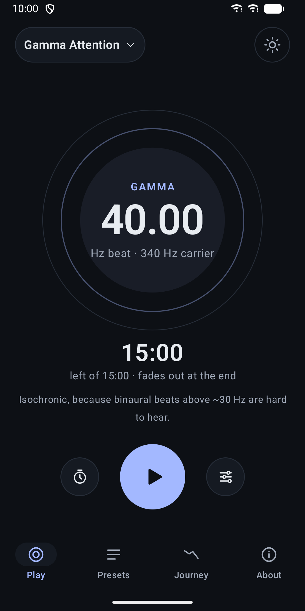

Binaural Beats
Binaural and isochronic beats to relax, focus or sleep. No ads, fully offline.







About
Binaural Beats creates soft beat tones live on your phone. Pick a starting preset, adjust it to your taste and let it play in the background while you relax, meditate, work or fall asleep. Four ways to hear a beat • Binaural: each ear gets a slightly different tone, and you hear the difference as a gentle pulse. Use headphones. • Monaural: both tones are mixed into both ears. Works on speakers too. • Isochronic: one tone that softly pulses on and off. • Bilateral: one tone moves calmly back and forth between your left and right ear. Switching modes crossfades smoothly, without clicks. Shape the sound • Beat from 0.25 to 45 Hz, with a live label for the band (Delta, Theta, Alpha, Beta, Gamma). • Carrier tone from 100 to 1000 Hz. • Optional white, pink or brown noise, with its own volume. • Sine or soft square pulse for isochronic and bilateral mode. Sessions that fade gently Choose 5 to 90 minutes or no limit. Every session fades in, fades out at the end, and pause, resume and stop fade softly too. Journeys Build a session from steps that hold a beat or glide it slowly to another one, for example from 12 Hz down to 3 Hz to wind down in the evening. A chart shows how the beat changes over time. Presets Eight starting points are included: Deep Sleep, Nap, Relax, Meditation, Calm Focus, Active Focus, Gamma Attention and Wind Down. Save your own versions, duplicate, rename and delete them, and import or export them as a file. Plays in the background Playback keeps going with the screen off, with controls in the notification and on the lock screen. A home-screen widget shows the current preset with a play button. The app does not pause other audio, so you can play beats quietly under your music or a podcast. Export as audio Save a session as a WAV file to play it anywhere. Honest about the evidence The About page sums up the research in plain words: effects are modest and mixed, with the clearest results for short-term relaxation. This app is a relaxation tool, not a medical device. Before the first play it shows a short safety note about volume, driving and medical conditions. Private by design No account, no ads, no tracking and no internet access. Your presets and settings stay on your device. Also: light and dark theme, a reduce motion option, and English, German and Spanish.